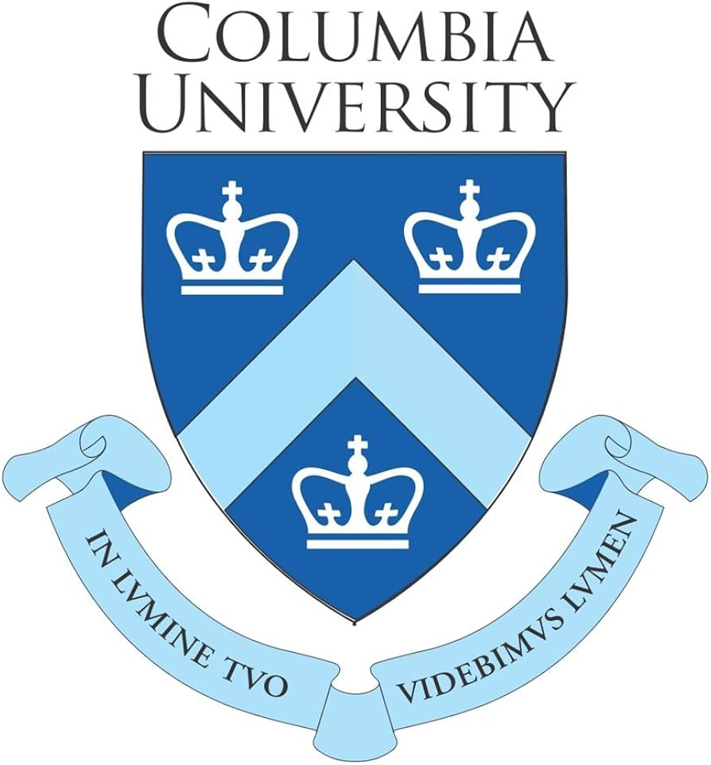

Reneth Raj Simon
Pursuing MS in Computer Science at Columbia University
AI/ML Researcher & Engineer specializing in deep learning, computer vision, and natural language processing. Graduate Research Assistant at Columbia's GILM Lab. Published author in medical AI. Building systems that bridge rigorous research and real-world impact.
(MS CS)
(B.Tech, /10)
Education

Message to Recruiters
Mark Twain once wrote that the two most important days in your life are the day you are born and the day you find out why. I think about that a lot. For most of my life I have been drawn equally to the logic of machines and the emotion of storytelling, but it took sitting with real problems, a century-old injustice waiting to be resolved and a disease that goes undetected for years in the people it affects, to understand what I actually want to build with that combination.
Steve Jobs told a graduating class to stay hungry and stay foolish. I try to hold both. The hunger shows up in the work: a 3.83 GPA at Columbia, published research in medical imaging, hands-on engineering across the full ML stack from data pipelines to deployed models, and a current research role where the output genuinely matters to real people. The foolishness, I hope, shows up in the willingness to ask bigger questions than the immediate task requires, and to care about things that do not fit neatly on a benchmark.
What I hope comes through in this portfolio is that the work is intentional. At Columbia's GILM Lab, I am not just running models. I am working on a project with real stakes. At Manipal, I did not just publish. I worked alongside surgeons to understand a problem before I tried to solve it. I am comfortable moving between research notebooks and production codebases, between deep theory and practical deployment.
I am actively looking for roles in AI research, ML engineering, or applied AI. I would be grateful for the opportunity to talk. There is no pressure and no pitch. Just a conversation.
About
I am a graduate researcher and engineer at Columbia University, where I am pursuing a Master of Science in Computer Science with a focus on artificial intelligence and deep learning. My work sits at the intersection of research and engineering. I design and build systems that are not only technically rigorous but genuinely useful in the world.
At Columbia's Graphics Imaging and Light Measurement Lab, I am developing multimodal deep learning pipelines and working on unifying multimodal embedding spaces to enable joint reasoning across documents, photographs, and geometric data. This research supports the 1921 Tulsa Race Massacre Death Investigation, one of the most consequential unsolved cases in American history. The work requires reasoning across modalities, collaborating with historians and legal researchers, and building systems that are both accurate and interpretable under real-world conditions.
Prior to Columbia, I conducted research on AI-based detection and classification of Charcot neuroarthropathy from foot X-rays, a condition that is frequently misdiagnosed. Working directly with orthopaedic surgeons, I built a multi-stage diagnostic pipeline combining segmentation, attention-enhanced classification, and deep supervision. That work resulted in a peer-reviewed publication in the Indian Journal of Orthopaedics and a second paper currently under review at Multimedia Tools and Applications.
Beyond research, I have engineering experience that spans video analysis pipelines at YesYem LLC, ecological monitoring at Airis4D, and enterprise chatbot development at Gadgeon Systems. I am comfortable moving between research notebooks and production codebases, between PyTorch and FastAPI, between theory and deployment.
I am also a filmmaker and theatre director. As Vice President of Cinefilia, Manipal University's premier cultural club, I organised nationwide events attended by up to 10,000 people. That experience sharpened skills that no ML course teaches: how to lead teams under pressure, communicate ideas to non-technical audiences, and build things that make people feel something.
Professional Experience
- Built scalable FastAPI pipelines for short-form video ingestion, frame extraction, and visual feature encoding using computer vision models, combined with LLM-based semantic analysis and LDA-driven keyword clustering.
- Designed and optimized a personalized news feed recommendation system leveraging vector embeddings, retrieval-augmented generation (RAG), topic modelling, and Pinecone vector indexing to improve content relevance and user engagement.
- Developed a YOLOv8 instance segmentation pipeline to analyze 174,000 sq. ft. of aerial imagery, automating plant and tree population monitoring for a community-based bio-science research initiative.
- Identified a potential 36% increase in green coverage through segmentation-based ecological assessment, contributing to data-driven sustainability research.
- Designed a knowledge-based chatbot achieving 94% accuracy using GPT4ALL Snoozy and LangChain, implementing a RAG pipeline with cosine similarity search for context-aware, structured responses.
- Constructed a knowledge base from 50+ data sources using sentence-transformer embeddings and vector indexing via ChromaDB.
- Led Manipal University's premier cultural club to national recognition, overseeing administration, event execution, and cross-team coordination across a full academic year.
- Organized nationwide theatre and filmmaking festivals drawing 8,000–10,000 attendees, managing budgets, vendor negotiations, and on-site logistics.
Research Experience
Selected Projects
Publications
Skills
Contact
Manhattan, New York, NY, USA
Whether you are looking for a research collaborator, an ML engineering hire, or simply want to exchange ideas, I am always open to a conversation.